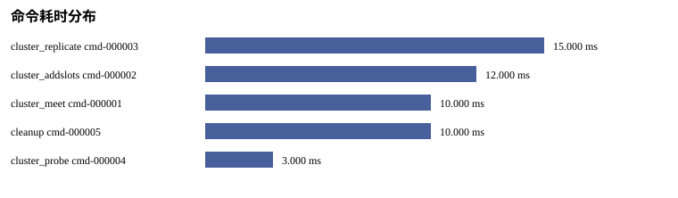

Status: PASS
Source phase: M1-S03
| 字段 | 值 |
|---|---|
| run_id | MISSING: run_id absent from run metadata |
| created_at | MISSING: created_at absent from run metadata |
| git_sha | MISSING: git_sha absent from run metadata |
| valkey_version | MISSING: valkey_version absent from run metadata |
| artifact_root | MISSING: artifact_root absent from run metadata |
| Name | Status |
|---|---|
| source_phase | PASS |
| real_valkey_evidence | SKIPPED_WITH_REASON |
| failover | SKIPPED_WITH_REASON |
| cleanup | PASS |
| setup_telemetry | SKIPPED_WITH_REASON |
| command_audit | PASS |
| 指标 | 状态 | 原因 |
|---|---|---|
| split_brain_duration_ms | SKIPPED_WITH_REASON | M1-S03 covers command audit logging; failover measurement is handled in later milestone1 stages. |
| 阶段指标 | 耗时 ms |
|---|---|
| SKIPPED_WITH_REASON: 无可排序的阶段耗时 | |
| 节点 | ready ms | 角色 | 状态 |
|---|---|---|---|
| SKIPPED_WITH_REASON: 无慢节点样本 | |||

| 命令 | 操作 | 类型 | 耗时 ms | 状态 |
|---|---|---|---|---|
| cmd-000003 | cluster_setup | cluster_replicate | 15 | PASS |
| cmd-000002 | cluster_setup | cluster_addslots | 12 | PASS |
| cmd-000001 | cluster_setup | cluster_meet | 10 | PASS |
| cmd-000005 | cleanup | cleanup | 10 | PASS |
| cmd-000004 | cluster_setup | cluster_probe | 3 | PASS |
| 命令 | 操作 | 类型 | 耗时 ms | 状态 |
|---|---|---|---|---|
| none | ||||
| 命令 | 操作 | 类型 | 耗时 ms | 状态 |
|---|---|---|---|---|
| none | ||||
| 命令类型 | 数量 |
|---|---|
| cleanup | 1 |
| cluster_addslots | 1 |
| cluster_meet | 1 |
| cluster_probe | 1 |
| cluster_replicate | 1 |